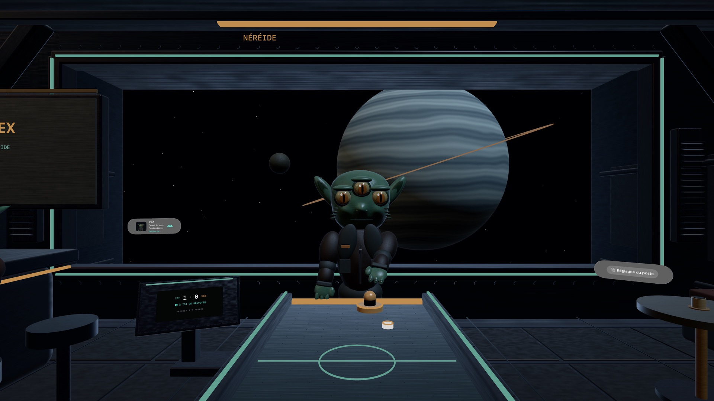

Duel de palets spatial · Apple Vision Pro
Une table. Neuf adversaires.
Entre dans un café spatial immersif. Ouvre le sas, choisis ton adversaire et marque sept points pour remporter le match.
Jeu solo natif visionOS · Interface français et anglais


À chacun son monde
Neuf mondes, neuf personnalités.
De Gloop à Ace-X, chaque adversaire apporte sa difficulté, son décor et son ambiance musicale.
Une raquette dans ta main.
Guide la raquette avec ta main droite, ou regarde la raquette turquoise et pince pour la déplacer.
Un café à ton rythme.
Ajuste la hauteur de table, recentre la commande et mets la partie en pause. Une démonstration automatique est aussi disponible.